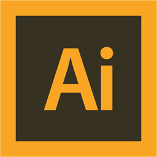
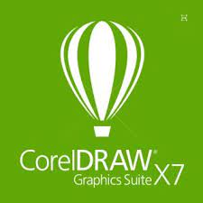

Ferramentas utilizadas:
Projetos: Photoshop, Corel Draw e Illustrator.


Estrutura do site: HTML, CSS e Javascript.

Wallpaper feito em referência a uma música específica
Música escolhida: "Passaram as estações" de Cássia Eller.
Wallpaper feito em referência a um filme específico
Filme escolhido: "Django Livre" de Quentin Tarantino.
Inspiração: Filme Sangue Negro de Paul Thomas Anderson

Inspiração: Série Breaking Bad (2008-2013)
Uma estampa de caneca de temática faroeste